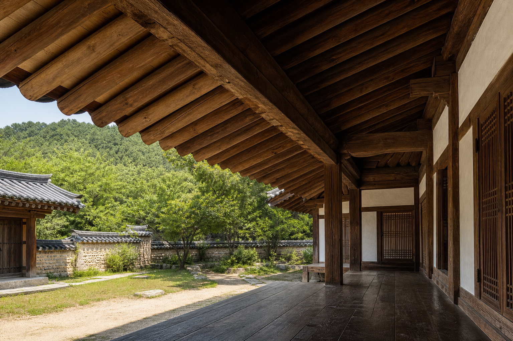

한옥 처마와 서까래가 그늘을 만드는 방식

한옥을 멀리서 보면 가장 먼저 지붕의 선이 보입니다. 가까이 다가가면 그 선은 한 장의 얇은 처마가 아니라 여러 목재 부재가 차례로 힘을 나누는 구조라는 사실이 드러납니다. 서까래는 지붕면을 따라 길게 놓이며, 도리와 보 위에 기대어 기와와 지붕 바탕의 무게를 전달합니다. 처마 끝으로 갈수록 서까래의 배열은 건물 안쪽과 바깥쪽의 경계를 만들고, 그 아래에는 햇빛이 한 번 걸러진 조용한 그늘이 생깁니다.
이 글에서 다루는 처마는 단순한 장식이 아닙니다. 비를 멀리 떨어뜨리고, 여름 햇빛을 눌러 주며, 대청과 방 앞의 사용감을 바꾸는 목구조입니다. 특히 한옥의 처마는 지붕 하중과 생활 환경을 동시에 다루기 때문에 가구 제작자가 보기에도 배울 점이 많습니다. 작은 테이블의 상판 돌출, 의자의 팔걸이 끝, 선반의 앞단처럼 '얼마나 내밀 것인가'라는 질문이 구조와 사용성 사이에서 결정되기 때문입니다.
처마는 지붕의 끝이 아니라 생활 공간의 시작입니다
처마는 지붕이 벽 바깥으로 뻗어 나온 부분입니다. 바깥에서 보면 지붕의 끝선이지만, 집 안쪽에서 보면 마당과 방 사이에 놓인 완충 공간을 만듭니다. 대청에 앉았을 때 햇빛이 곧바로 몸에 닿지 않고, 비가 오는 날에도 문 앞에 짧은 여유가 생기는 이유가 여기에 있습니다. 처마가 충분히 깊으면 벽과 창호가 직접 비바람을 맞는 시간이 줄고, 사람이 머무는 가장자리 공간도 부드러워집니다.
한옥 해설 자료에서 처마는 들어오는 햇빛의 양을 조절하는 중요한 요소로 자주 설명됩니다. 이 말은 처마가 계절을 완전히 해결한다는 뜻이 아니라, 지붕의 돌출과 실내외 경계가 빛의 각도에 반응하도록 설계된다는 뜻에 가깝습니다. 여름의 높은 해는 처마 아래에서 한 번 걸리고, 겨울의 낮은 해는 더 깊숙이 들어올 수 있습니다. 구조 하나가 온도, 밝기, 눈부심, 창호 보호를 함께 다루는 셈입니다.
서까래는 일정한 간격으로 하중을 나눕니다
서까래는 지붕의 경사 방향으로 놓이는 길쭉한 부재입니다. 기와와 흙, 산자나 개판 같은 지붕 바탕은 넓은 면으로 하중을 만들지만, 그 무게는 결국 반복되는 서까래를 통해 도리와 보, 기둥 쪽으로 내려갑니다. 그래서 서까래의 간격은 시각적인 리듬일 뿐 아니라 지붕면을 고르게 받치는 구조적 질서입니다. 일정한 간격이 무너지면 지붕면의 힘도 고르게 흐르기 어렵습니다.
처마 아래에서 서까래가 드러나면 구조가 그대로 장식이 됩니다. 목재의 끝이 반복되며 그림자를 만들고, 지붕의 깊이가 눈으로 읽힙니다. 좋은 가구에서 프레임과 다리, 가로대가 보이는 방식과 비슷합니다. 숨겨도 되는 부재가 밖으로 드러날 때에는 단순히 예뻐 보이기 위한 선이 아니라, 실제 힘의 흐름과 맞아야 오래 자연스럽습니다.
부연은 처마를 더 깊게 만들 때 쓰는 보조 서까래입니다
전통 목조건축에서는 처마를 더 길게 내밀기 위해 부연이라는 짧은 보조 서까래를 덧대기도 합니다. 일반 서까래만으로 처마를 길게 빼면 끝부분의 처짐과 회전력이 커질 수 있습니다. 부연은 처마 끝의 선을 한 번 더 연장하면서, 그 깊이가 너무 무겁게 보이지 않도록 비례를 정리합니다. 겹처마에서 보이는 한옥의 풍부한 그림자와 층위는 이런 부재들의 조합에서 나옵니다.
다만 처마를 깊게 만드는 일은 단순히 부재를 길게 붙이는 문제가 아닙니다. 바깥으로 나간 길이만큼 안쪽에서는 붙잡는 힘이 필요하고, 도리와 보, 공포나 장여 같은 주변 부재의 관계도 함께 맞아야 합니다. 가구에서도 상판을 넓게 돌출시키려면 다리 위치, 앞치마, 브래킷, 재료 두께를 함께 보아야 하는 것과 같습니다. 아름다운 돌출은 언제나 보이지 않는 균형을 요구합니다.
깊은 그늘은 구조와 비례가 함께 만든 결과입니다
한옥의 처마 아래 그늘은 단순히 어두운 영역이 아닙니다. 밝은 마당과 어두운 대청 사이에 놓인 중간 밝기의 공간입니다. 이 그늘이 있으면 실내는 갑작스럽게 눈부시지 않고, 바깥 풍경은 프레임처럼 정리됩니다. 목재 부재가 반복해서 만든 그림자는 지붕의 두께와 방향을 보여 주고, 사람은 그 아래에서 자연스럽게 쉬어 가는 자리를 찾습니다.
처마의 그늘은 가구 디자인에서도 중요한 힌트를 줍니다. 상판 아래의 그림자, 수납장 문 틈의 어둠, 선반 앞단의 두께감은 모두 사용자가 가구의 깊이와 안정감을 읽는 단서입니다. 구조가 너무 얇아 보이면 불안하고, 지나치게 무거우면 공간을 누릅니다. 한옥 처마의 좋은 비례는 필요한 만큼 내밀고, 필요한 만큼 받치며, 빛과 그림자까지 구조의 일부로 다룹니다.
비를 멀리 보내는 일도 구조의 역할입니다
처마는 햇빛뿐 아니라 빗물도 다룹니다. 지붕을 타고 내려온 물이 벽 바로 아래로 떨어지면 창호와 기단 주변이 쉽게 젖습니다. 처마가 밖으로 나가 있으면 물은 건물에서 조금 떨어진 곳으로 떨어지고, 벽체와 목재 부재는 직접적인 젖음에서 한 걸음 물러납니다. 물론 처마만으로 모든 습기 문제를 해결할 수는 없지만, 물이 흐르는 경로를 먼저 정리해 주는 역할은 분명합니다.
가구에서도 비슷한 원리가 있습니다. 싱크대 상판의 물끊기, 실외 벤치의 모서리 라운딩, 테이블 상판 아래의 작은 턱은 물과 오염이 어디로 이동하는지를 바꿉니다. 좋은 제작은 재료를 강하게 만드는 것만이 아니라 물, 빛, 손, 발이 지나가는 길을 예측하는 일입니다. 한옥 처마는 그 예측이 건축 규모에서 어떻게 작동하는지 보여 줍니다.
처마의 선은 구조가 정리될 때 자연스럽습니다
한옥 처마가 아름답게 느껴지는 이유는 선이 장식으로만 그려져 있지 않기 때문입니다. 서까래와 부연, 도리와 보, 기둥의 관계가 맞아야 처마선도 설득력을 얻습니다. 끝이 살짝 올라간 듯한 인상, 그림자의 깊이, 반복되는 목재 끝의 리듬은 모두 실제 부재의 질서와 연결됩니다. 그래서 처마를 볼 때에는 곡선만 보지 말고 그 곡선을 만드는 부재들을 함께 보는 편이 좋습니다.
가구 제작에서도 같은 태도가 필요합니다. 다리 하나의 각도, 손잡이 하나의 위치, 상판 끝의 두께는 따로 결정되지 않습니다. 사람이 쓰는 방향, 힘이 흐르는 방향, 빛이 닿는 방향이 함께 정리될 때 자연스럽습니다. 한옥의 처마와 서까래는 목재 구조가 생활의 감각으로 번역되는 장면입니다. 눈에 보이는 선이 편안하려면 그 안쪽의 힘도 편안하게 흘러야 합니다.